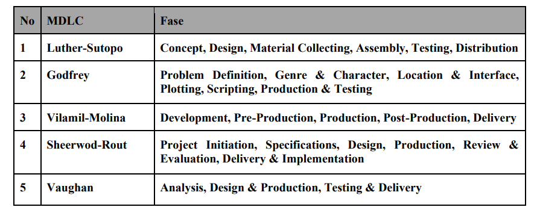
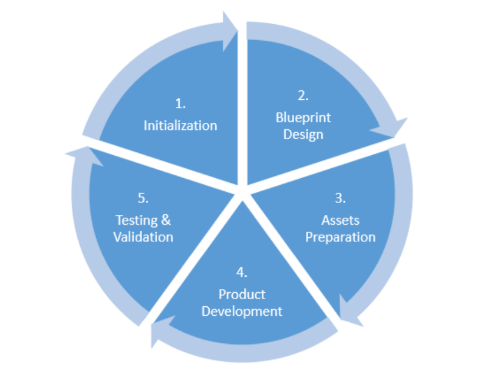
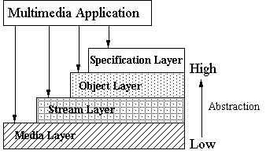
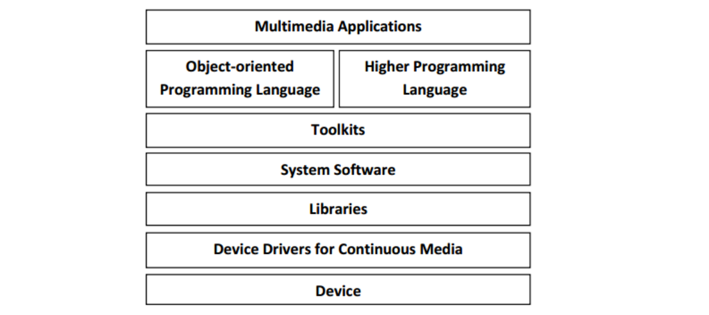

Unit-1: Introduction
1.1 Definition
Multimedia is the presentation of text, pictures, audio, and video with links and tools that
allow the user to navigate, engage, create, and communicate using a computer.
It refers to the computer-assisted integration of various media forms, including: Text,
Drawings, Still and moving images (videos), Graphics, Animation, Audio, Any other digital
medium.
Key Characteristics
Multimedia is:
- Interactive: allows users to control the flow of information
- Dynamic: combines multiple media forms to create a richer experience
- Computer-based: relies on digital technology to deliver and interact with the content
1.2 Use of Multimedia
Here are the common uses of multimedia:
- Use of Multimedia in Advertising Industry:
In advertising, multimedia is a powerful tool that combines various forms of media, such as images, videos, and audio, to create compelling and memorable advertisements. By using interactive elements like videos, animations, and interactive ads, brands can engage their audience more effectively, boost brand awareness, and drive higher sales and conversions. - Use of Multimedia in Education:
In education, multimedia enhances the learning experience by making lessons more dynamic and engaging. Interactive tutorials, educational videos, animations, and simulations help students grasp complex concepts more easily. Multimedia in classrooms also caters to different learning styles, ensuring better retention and understanding of the subject matter. - Use of Multimedia in Mass Media and Journalism:
In mass media, including news outlets, television, and online platforms, multimedia is used to enrich storytelling. By combining text, images, videos, infographics, and interactive graphics, journalists can deliver news in a more engaging and easily accessible format, allowing audiences to experience stories in multiple ways and improving overall comprehension. - Use of Multimedia in Gaming Industry:
In the gaming industry, multimedia plays a vital role in creating immersive experiences. High-quality graphics, sound design, animations, and virtual reality (VR) or augmented reality (AR) technologies make games more realistic and interactive. These elements are key to the development of engaging and complex virtual worlds that players can explore and interact with. - Use of Multimedia in Science and Technology:
In science and technology, multimedia is essential for visualizing complex data and creating simulations. Interactive 3D models, animations, and videos help scientists and engineers visualize systems, processes, and phenomena that would otherwise be difficult to understand. Multimedia tools are also used in educational settings to support interactive learning and better demonstrate scientific principles. - Use of Multimedia in Fine Arts:
In the world of fine arts, multimedia is used as a medium to explore new forms of expression. Artists often combine traditional forms like painting or sculpture with digital technologies such as video, sound, and interactive elements. This combination allows artists to push boundaries, creating innovative installations, performances, and digital artworks that engage audiences in new and exciting ways. - Use of Multimedia in Engineering:
In engineering, multimedia tools are employed for simulation and visualization purposes. Engineers use multimedia to create 3D models of structures, prototype designs, and run virtual tests to assess how a product will perform under various conditions. This allows for more efficient design processes, reduces costs, and aids in training engineers by providing hands-on, interactive learning experiences. - Use of Multimedia in Research:
In research, multimedia aids in presenting complex findings in a visually accessible manner. Researchers use multimedia for data visualization, interactive graphs, and animated presentations to help others understand their work more clearly. Moreover, multimedia is also used to disseminate research findings through online publications, webinars, and digital conferences, making knowledge more accessible to a global audience. - Use of Multimedia in Architecture & Interior Designing:
In architecture and interior design, multimedia tools are employed to create realistic visualizations and 3D renderings of designs before they are physically built. Architects and designers use multimedia for virtual walkthroughs, augmented reality (AR) presentations, and detailed simulations to showcase their ideas to clients. This helps clients understand and experience a design concept more vividly, leading to better-informed decision-making. - Use of Multimedia in Fashion Design:
In fashion design, multimedia plays an important role in showcasing new collections, creating digital catalogs, and enabling virtual try-ons. Fashion designers use multimedia tools to create interactive fashion shows, allowing customers to experience collections online in dynamic ways. Moreover, virtual fitting rooms and 3D garment modeling help customers visualize how clothing will look on them, enhancing the online shopping experience. - Use of Multimedia in Artificial Intelligence:
In artificial intelligence (AI), multimedia technologies are utilized for tasks like data analysis, machine learning, and pattern recognition. AI systems use multimedia data such as images, audio, and video to train algorithms to recognize patterns, make predictions, and improve natural language processing (NLP). Multimedia also helps AI-driven systems in areas like facial recognition, voice assistants, and autonomous vehicles, enhancing their functionality and accuracy.
1.3 Components of Multimedia
Here are the 5 components of Multimedia:
- Text: Text is one of the most fundamental components of multimedia. It serves as a primary medium for conveying information in various forms, such as titles, headlines, captions, instructions, and explanations. Text is used in nearly all multimedia projects to provide clarity and context, guiding users through the content. It can also be styled with different fonts, colors, and sizes to emphasize key points and create visual hierarchy.
- Images: Images are essential in multimedia as they help to visually communicate ideas, emotions, or data. They support static text and enhance the overall aesthetic appeal of a project. From photographs to illustrations, images provide context and clarity, making content more engaging and easier to understand. They are commonly used in websites, presentations, advertisements, and educational materials to capture attention and convey messages quickly and effectively.
- Audio: Audio encompasses sounds, music, voiceovers, and sound effects, and plays a crucial role in enriching the multimedia experience. Sound can create atmosphere, reinforce the message, or provide entertainment value. It enhances storytelling by adding an emotional layer—such as through background music, voice narration, or sound effects—and helps engage audiences on a deeper level. Audio is widely used in podcasts, films, video games, advertisements, and websites.
- Video: Video is a dynamic component of multimedia that brings together a sequence of images (frames) shown in rapid succession to create the illusion of movement. It can include recorded footage, animations, or a combination of both. Video is often used in storytelling, tutorials, and advertisements, as it effectively conveys motion, action, and emotion. It is typically published in digital formats such as MP4, WMV, and AVI, and is one of the most popular mediums on platforms like YouTube, streaming services, and social media.
- Animation: Animation involves the creation of moving images through the rapid display of static images or digital drawings. Unlike video, which is made from real-life footage, animation relies on digital characters, illustrations, or 3D models. It is used to depict motion, convey complex concepts, and create visual effects. Animation can be both two-dimensional (2D) and three-dimensional (3D), and is widely used in films, games, advertisements, educational content, and simulations. It allows for more creative flexibility by representing virtual worlds or imaginative elements that are not constrained by reality.
1.4 Multimedia building blocks
The following are the basic building blocks of Multimedia.
- Text: A fundamental element of multimedia, text provides the foundation for conveying information. It can be used as static or dynamic content, and can be formatted using various styles, fonts, and sizes.
- Images: Still or moving images, including photographs, graphics, and animations, are used to convey visual information and enhance the multimedia experience.
- Video: Moving images with sound, used to convey complex information, tell stories, and provide tutorials.
- Sound: Audio elements, including music, voiceovers, and sound effects, add depth and emotion to multimedia content.
- Animation: Dynamic graphics and motion graphics used to create interactive and engaging multimedia experiences.
- Graphics: Vector and raster graphics used to create visual elements, such as logos, icons, and illustrations.
- Colors: A crucial aspect of multimedia, colors are used to convey meaning, attract attention, and create visual appeal. Understanding color models, such as RGB, CMYK, and HSB, is essential for effective color usage.
- Vectors: Mathematical representations of shapes and lines used to create scalable and editable graphics.
1.5 Multimedia and Personalized Computing
Personalized computing, also known as Multimedia Personal Computer (MPC), is
a type of computer designed to optimize the display and editing of multimedia content.
The MPC was developed in 1990 and is any computer that can run programs that combine video, animation, audio, and graphics.
There are three MPC standards MPC, MPC2, and MPC3.
The MPC was developed in 1990 and is any computer that can run programs that combine video, animation, audio, and graphics.
There are three MPC standards MPC, MPC2, and MPC3.
These computers typically feature:
- Stronger hardware, including larger memory stores (RAM) and hard drives, to handle the demands of multimedia files
- Pre-installed software for working with multimedia files, such as image and video editing programs
- Surround-sound capabilities and extra peripherals for media hardware
- Larger screen sizes to enhance the viewing experience
Personalized computing focuses on providing users with a tailored computing experience, allowing
them to customize their environment and workflow to suit their specific needs and preferences.
This
includes:
- Configuring software and hardware settings to optimize performance for specific tasks or applications
- Installing and using specialized software for multimedia creation, editing, and playback
- Integrating peripherals and accessories, such as joysticks, gamepads, or graphics tablets, to enhance the user experience
1.6 Medium
Medium refers to the specific form or channel through which content is
delivered and consumed.
Multimedia involves the integration of multiple media types to convey information, create
entertainment, or enhance communication. Each medium has unique characteristics and functions,
contributing to the overall multimedia experience.
Types:
Types:
- Storage media: Physical devices used to store digital data, such as magnetic tapes, magnetic disks, digital optical disks, paper, and others.
- Transmission media: Physical means of transmitting data, including cables (e.g., Ethernet, coaxial), radio towers, satellites, and wireless networks (e.g., Wi-Fi, Bluetooth).
- Representation media: How information is internally represented within a computer, including encoding schemes, data formats, and file types.
1.7 Multimedia system and properties
A multimedia system is a computer-based system that can create, store, process, and deliver
multimedia content. This type of system integrates various forms of media, such as text,
graphics,
audio, video, and animation, to provide a comprehensive user experience. Multimedia systems are
designed to handle the complexities of processing and rendering these different media types
simultaneously.
Properties of a Multimedia System
- Combination of Media: A multimedia system combines multiple media types, such as text, images, audio, and video, to create a unified presentation.
- Independence: Each media type is independent of the others, allowing for flexible manipulation and presentation.
- Computer-Supported Integration: The system is controlled by a computer, which enables efficient integration and management of the various media components.
- Communication System: The multimedia system includes a communication component, enabling the exchange of information between devices and users.
- Support for Continuous and Discrete Media: A multimedia system can handle both continuous media (e.g., video, audio) and discrete media (e.g., images, text).
- Synchronization: The system ensures timing, spatial, and semantic synchronization relations between the various media components to create a cohesive presentation.
1.8 Data stream characteristics
A data stream in multimedia refers to a continuous flow of data that carries various forms of
media
content, such as audio, video, text, and images, from a source to a destination. This data can
be
transmitted in real-time or stored for later use.
Data Stream Characteristics
- Time-dependent: Continuous media, such as audio and video, are inherently time-dependent. Their processing is subject to time constraints, and their presentation is governed by start and end times, as well as duration.
- Unconnected vs. Connected: A data stream with gaps between information units is called an unconnected data stream. In contrast, a connected data stream has no gaps between individual packets or information units.
- Packetization: Data streams are often packetized, where each packet contains a fixed amount of data, such as a video frame or an audio sample. This allows for efficient transmission and processing of the data stream.
- Variable Bit Rate (VBR) vs. Constant Bit Rate (CBR): Data streams can have variable or constant bit rates, depending on the compression algorithm and the type of media being transmitted. VBR streams adapt to changing data rates, while CBR streams maintain a consistent rate.
1.9 Data Stream Characteristics for Continuous Media
Continuous media refers to types of multimedia data that are streamed or played in a continuous
flow, such as audio and video.
Here are the key characteristics:
Here are the key characteristics:
- Real-Time Delivery:
Continuous media data must be delivered in real-time to avoid interruptions or delays in playback. - Temporal Dependency:
Data within a continuous media stream is temporally dependent, meaning that it must be processed and played in a specific order to maintain coherence. - Latency Sensitivity:
Continuous media is sensitive to latency, the delay between data transmission and reception. - Bandwidth Requirements:
Continuous media streams often require substantial bandwidth to transmit high-quality audio and video. - Buffering:
To manage variability in network conditions and ensure smooth playback, continuous media streams use buffering to temporarily store data before playback. - Error Resilience:
Continuous media streams must handle errors and data loss gracefully, often using error correction and concealment techniques.
Data Stream Characteristics for Information Units
Information units refer to discrete chunks of data that can be individually
processed or accessed,
such as files or packets of data in a multimedia system.
The characteristics of data streams for information units are:
The characteristics of data streams for information units are:
- Discrete and Structured:
Information units are discrete and often organized in a structured format, such as files or packets. - Packetization:
Information units are often broken down into packets or chunks for transmission over networks. - Latency Tolerance:
Unlike continuous media, information units may tolerate higher latency as they are processed in discrete chunks rather than in real-time. - Compression and Encoding:
Information units often use compression and encoding techniques to reduce file size and optimize transmission. - Error Detection and Correction:
Error detection and correction mechanisms are applied to information units to ensure data integrity during transmission and storage. - Scalability:
Information units can be scaled and managed in terms of size and quantity, allowing for handling large datasets or multiple files.
Unit-2: Sound/ Audio System
2.1 Concept of Sound System
Sound refers to audio elements that can be integrated into digital content to enhance the user
experience, provide information, or create an immersive environment.
Sound plays a crucial role in multimedia applications by adding depth, emotion, and context to
various forms of media, such as videos, games, presentations, and interactive experiences.
A sound system refers to the combination of equipment and technologies used to produce, amplify, and manage sound. It is designed to convert audio signals into audible sound waves, allowing for clear and effective sound reproduction in various environments. Sound systems are used in a wide range of applications, including concerts, public address systems, home theaters, and personal audio devices.
A sound system refers to the combination of equipment and technologies used to produce, amplify, and manage sound. It is designed to convert audio signals into audible sound waves, allowing for clear and effective sound reproduction in various environments. Sound systems are used in a wide range of applications, including concerts, public address systems, home theaters, and personal audio devices.
Components of Sound System
- Source: The origin of the audio signal, which can be any device that generates or provides audio.
- Amplifier: A device that increases the amplitude of audio signals, making them strong enough to drive speakers.
- Speakers: Devices that convert amplified audio signals into sound waves.
- Cables and Connectors: Physical components that connect and transmit audio signals between various parts of the sound system.
- Equalizer: A device or software that adjusts the balance between frequency components of the audio signal.
- Processor: Devices or software that apply effects and processing to the audio signal.
2.2 Music and speech
Music refers to the organized sound produced by instruments or voices,
used to enhance mood, convey emotion, and provide a background to multimedia content.
Characteristics
- Emotional Impact: Music can evoke various emotions such as joy, sadness, excitement, or tension.
- Atmosphere and Mood Setting: Music sets the atmosphere and tone of multimedia content.
- Background Enhancement: Provides a background sound that complements the main content without overwhelming it.
- Branding and Recognition: Music can serve as a part of branding efforts, such as jingles or theme songs.
- Common Formats: MP3, WAV, AAC, FLAC.
Speech in Multimedia
Speech refers to the spoken words delivered by a person or a synthetic
voice, used for communication, narration, and instruction within multimedia content.
Characteristics
- Communication and Narration: Speech provides direct communication, narration, and explanation within multimedia content.
- Voice Acting: Speech used by voice actors to bring characters to life in multimedia content.
- Accessibility: Speech enhances accessibility for users with visual impairments or reading difficulties.
- Dialogue and Interaction: Speech enables dialogue and interactive communication within multimedia applications.
- Localization and Translation: Speech can be translated and localized to reach a global audience.
- Common Formats: MP3, WAV, OGG, and AAC.
2.3 Speech Generation
Speech generation, also known as text-to-speech (TTS), is a method used
in multimedia to convert written text into spoken words. This technology is used to create audio
output in various applications, such as virtual assistants, GPS systems, and audiobooks.
The process of speech generation involves several steps. First, the written text is analyzed by
a TTS system, which breaks it down into small units called phonemes. Phonemes are the smallest
units of sound that make up words in a language.
Next, the TTS system applies rules of pronunciation and intonation to the phonemes based on the language being spoken. This is called phonetic analysis. The system uses a database of pre-recorded speech sounds to create a speech waveform for each phoneme, which is then combined to create a full sentence.
The final step is to convert the speech waveform into an audio file that can be played back by a computer or other device. This can be done using various compression techniques to reduce the file size while maintaining the quality of the sound.
Next, the TTS system applies rules of pronunciation and intonation to the phonemes based on the language being spoken. This is called phonetic analysis. The system uses a database of pre-recorded speech sounds to create a speech waveform for each phoneme, which is then combined to create a full sentence.
The final step is to convert the speech waveform into an audio file that can be played back by a computer or other device. This can be done using various compression techniques to reduce the file size while maintaining the quality of the sound.
2.4 Speech Analysis
Speech analysis is the process of examining and extracting meaningful
information from spoken language. It involves a range of techniques and methodologies to
understand, interpret, and manipulate speech signals. Speech analysis is a critical component in
various applications such as speech recognition, speaker identification, language processing,
and multimedia systems.
Objectives of Speech Analysis
- Feature Extraction: Identifying and extracting relevant features from speech signals for further processing.
- Speech Recognition: Converting spoken language into written text by recognizing and transcribing words and phrases.
- Speaker Identification and Verification: Identifying or verifying the identity of a speaker based on their voice characteristics.
- Speech Synthesis: Generating artificial speech from text or other inputs.
2.5 Speech Transmission
Speech transmission refers to the process of conveying spoken language
from one location to another through various communication channels. This involves capturing the
speech signal, encoding it for transmission, transmitting it over a medium, and then decoding it
at the receiver's end to reproduce the original speech. Effective speech transmission ensures
that the spoken message is accurately conveyed with minimal loss of quality and intelligibility.
Components of Speech Transmission
- Speech Capture: The process of capturing the spoken words using a microphone or other audio input devices.
- Encoding: Converting the captured speech signal into a digital format suitable for transmission.
- Transmission Medium: The channel through which the encoded speech signal is transmitted from the sender to the receiver.
- Decoding: Converting the received digital signal back into an analog format to reproduce the original speech.
- Speech Playback: Reproducing the decoded speech signal through speakers or other audio output devices.
Factors Affecting Speech Transmission Quality
- Bandwidth: The range of frequencies available for transmitting the speech signal.
- Latency: The delay between the speech signal being captured and its playback at the receiver's end.
- Noise and Interference: Unwanted signals that can distort or degrade the speech signal during transmission.
- Compression: Reducing the size of the speech signal for efficient transmission.
Applications
- Telecommunications: Transmission of speech over telephone networks.
- Broadcasting: Transmission of speech through radio and television.
- Online Communication: Transmission of speech over the internet.
- Public Address Systems: Transmission of speech in public spaces.
- Assistive Technologies: Transmission of speech to aid individuals with disabilities.
Unit-3: Images and Graphics
An image is a visual representation of something (object, scene,
person, or abstract concept), while a digital image is a binary representation of visual data.
It can be captured, created, and displayed using various mediums and technologies. These images
can take the form of photographs, graphics and individual video frames. For this purpose, an
image is a picture that was created or copied and stored in electronic form.
An image can also be described in terms of vector graphics or raster graphics. An image stored in raster form is sometimes called a bitmap. An image map is a file containing information that associates different locations on a specified image with hypertext links.
Graphics refers to the art of creating visual representations of data, including drawings, photographs, line art, graphs, diagrams, numbers, symbols, geometric designs, maps, and engineering drawings. In the context of computer technology, graphics can refer to:
An image can also be described in terms of vector graphics or raster graphics. An image stored in raster form is sometimes called a bitmap. An image map is a file containing information that associates different locations on a specified image with hypertext links.
Graphics refers to the art of creating visual representations of data, including drawings, photographs, line art, graphs, diagrams, numbers, symbols, geometric designs, maps, and engineering drawings. In the context of computer technology, graphics can refer to:
- Computer Graphics: The use of computer software to create and manipulate visual images, including 2D and 3D graphics, animations, and special effects.
- Graphics Card: A hardware device or card that handles the rendering of graphics on a computer screen.
- Graphics Engine: A software or hardware component that generates and manipulates graphics.
In everyday language, graphics can also refer to the overall visual
appearance or style of something, such as a game, movie, or website.
Some common image file formats used for raster graphics include:
- Joint Photographic Experts Group (JPEG)
- Portable Network Graphics (PNG)
- Graphics Interchange Format (GIF)
- Bitmap (BMP)
3.1 Digital Image Representation
Digital image representation refers to how images are stored,
processed, and displayed in digital form. This involves converting visual information into a
format that computers and electronic devices can manipulate. Here are the key concepts involved
in digital image representation:
Pixels
- Definition: Pixels (short for "picture elements") are the smallest units of a digital image. Each pixel represents a single point in the image.
- Grid Layout: Digital images are composed of a grid of pixels, arranged in rows and columns. The resolution of an image is determined by the number of pixels in its width and height (e.g., 1920x1080).
Resolution
- Definition: Resolution refers to the amount of detail an image holds, expressed as the number of pixels along the width and height of the image.
- High vs. Low Resolution: Higher resolution means more pixels and greater detail, while lower resolution means fewer pixels and less detail.
Color Representation
- Color Depth: The number of bits used to represent the color of each
pixel. Common color depths include:
- 8-bit Color: Each pixel can display 256 colors.
- 16-bit Color: Each pixel can display 65,536 colors.
- 24-bit Color (True Color): Each pixel can display over 16 million colors (8 bits per color channel for Red, Green, and Blue).
- Color Models: Different models used to represent color in digital
images, such as:
- RGB (Red, Green, Blue): The most common color model, where each pixel is represented by three values corresponding to the intensity of red, green, and blue.
- CMYK (Cyan, Magenta, Yellow, Key/Black): Used in color printing, where each pixel is represented by four values.
3.2 Image and graphic format
Image and graphic formats are standardized ways of encoding and
storing digital images and graphics. Each format has its own characteristics, advantages, and
typical use cases. There are several types of image and graphic formats, each with its own
strengths and weaknesses.
1. JPEG (Joint Photographic Experts Group)
- File Extension: .jpg, .jpeg
- Compression: Lossy
- Features:
- Widely used for photographic images due to its efficient compression.
- Supports 24-bit color depth, allowing for over 16 million colors.
- Compresses images by reducing file size, often at the cost of image quality.
- Not suitable for images requiring sharp edges or transparency.
- Use Cases: Photographs, web images, and images where file size is more important than perfect quality.
2. PNG (Portable Network Graphics)
- File Extension: .png
- Compression: Lossless
- Features:
- Supports 24-bit color depth and 8-bit transparency (alpha channel).
- Retains all image details without losing quality during compression.
- Ideal for images requiring transparency and sharp edges, such as logos and icons.
- Use Cases: Web graphics, images requiring transparency, and images where quality preservation is essential.
3. GIF (Graphics Interchange Format)
- Supports up to 8-bit color depth, limited to 256 colors.
- Supports simple animations by combining multiple frames into a single file.
- Supports transparency.
4. BMP (Bitmap)
- File Extension: .bmp
- Compression: None (Uncompressed), can also be lossless compressed
- Features:
- Stores images as a grid of pixels.
- Can handle images with different color depths (e.g., 1-bit, 4-bit, 8-bit, 24-bit).
- Large file size due to lack of compression.
- Use Cases: Windows system images, and applications where image quality is paramount and file size is not a concern.
5. TIFF (Tagged Image File Format)
- File Extension: .tiff, .tif
- Compression: Lossless (can also be uncompressed)
- Features:
- Highly flexible and supports various color depths and compression methods.
- Often used for high-quality images that require detailed storage.
- Supports multiple layers and pages.
- Use Cases: Professional photography, desktop publishing, and archiving high-quality images.
6. SVG (Scalable Vector Graphics)
- File Extension: .svg
- Compression: None (vector format)
- Features:
- XML-based format for vector graphics.
- Scalable without loss of quality, as images are defined by shapes and paths.
- Supports interactivity and animation via JavaScript and CSS.
- Use Cases: Web graphics, icons, logos, and illustrations that need to scale to different sizes without losing quality.
7. WebP
- File Extension: .webp
- Compression: Both lossy and lossless
- Features:
- Developed by Google for web images.
- Smaller file sizes compared to JPEG and PNG while maintaining quality.
- Supports transparency (alpha channel) and animation.
- Use Cases: Web images requiring efficient compression and high quality.
3.3 Image Synthesis
Image synthesis refers to the process of generating new images from scratch
or by combining and manipulating existing images using computational techniques. It deals with
the generation of images of real or imaginary objects. This involves creating visual content
that appears realistic or artistic, based on various algorithms and models. Image synthesis has
applications in computer graphics, virtual reality, gaming, and various fields that require
visual content creation.
Image synthesis is a powerful field in computer graphics that enables the creation of visual content through various computational techniques. By leveraging methods like procedural generation, ray tracing, neural networks, and image compositing, it facilitates the creation of realistic and artistic images for a wide range of applications. Despite challenges related to realism, computational resources, and data quality, ongoing advancements continue to expand the capabilities and applications of image synthesis in various industries.
Image synthesis is a powerful field in computer graphics that enables the creation of visual content through various computational techniques. By leveraging methods like procedural generation, ray tracing, neural networks, and image compositing, it facilitates the creation of realistic and artistic images for a wide range of applications. Despite challenges related to realism, computational resources, and data quality, ongoing advancements continue to expand the capabilities and applications of image synthesis in various industries.
Applications of Image Synthesis
- Entertainment and Media
- Movies and Animation: Creating special effects, CGI characters, and environments.
- Video Games: Generating textures, environments, and characters in real-time.
- Virtual and Augmented Reality
- VR: Generating immersive environments for VR experiences.
- Augmented Reality (AR): Overlaying synthesized images onto the real world.
- Architectural Visualization
Creating realistic images of buildings and interiors for design and presentation. - Product Design and Prototyping:
Generating images of products for design, marketing, and testing. - Medical Imaging:
Creating images for medical diagnosis, training, and research. - Art and Creativity:
Enabling artists to create new forms of digital art.
Challenges in Image Synthesis
- Realism: Creating images that are indistinguishable from real photographs.
- Computational Resources: High computational cost of generating complex images.
- Data Quality and Bias: Ensuring synthesized images are free from artifacts and biases present in training data.
- Interactivity: Generating high-quality images in real-time for interactive applications.
3.4 Analysis and Transmission
Image and Graphics Analysis
Image and graphics analysis involve examining digital images and graphics
to extract meaningful information, recognize patterns, and make decisions based on the content.
This is crucial in various applications, including image processing, computer vision, and
multimedia systems. Techniques in Image and Graphics Analysis:
- Feature Extraction
Identifying and extracting important features from an image, such as edges, textures, and shapes. - Pattern Recognition
Classifying and identifying patterns within an image. - Segmentation
Dividing an image into meaningful regions or segments. - Image Enhancement
Improving the visual quality of an image. - Image Compression
Reducing the size of an image file without significantly degrading its quality.
Methods: Lossy compression (e.g., JPEG), lossless compression (e.g., PNG).
Applications of Image and Graphics Analysis
- Healthcare
- Medical Imaging: Analyzing MRI, CT scans, and X-rays for diagnostics.
- Security and Surveillance
- Facial Recognition: Identifying individuals for security purposes.
- Object Detection: Monitoring and identifying suspicious activities.
- Automotive
- Autonomous Vehicles: Analyzing road conditions, recognizing traffic signs, and detecting obstacles.
- Retail and E-commerce
- Visual Search: Allowing users to search for products using images
- Entertainment
- Special Effects: Enhancing movies and games with computer-generated imagery (CGI).
Image and Graphics Transmission
Image and graphics transmission involve sending digital images and
graphics from one location to another, ensuring that the received content maintains its
integrity and quality.
This is essential for applications like online streaming, remote collaboration, and cloud-based
services.
Techniques in Image and Graphics Transmission
Techniques in Image and Graphics Transmission
- Encoding
Converting an image into a format suitable for transmission. - Transmission Protocols
Ensuring reliable and efficient transmission of images over networks.
Methods: TCP/IP for reliability, UDP for real-time applications.
Applications: Web browsing, video conferencing, live streaming. - Error Correction
Detecting and correcting errors that occur during transmission.
Methods: Forward error correction (FEC), automatic repeat request (ARQ). - Bandwidth Management
Optimizing the use of available bandwidth to maintain transmission quality.
Applications of Image and Graphics Transmission
- Streaming Services
- Video Streaming: Transmitting high-quality video content to users.
- Live Streaming: Broadcasting live events in real-time.
- Telecommunications
- Video Calls: Facilitating real-time visual communication.
- Multimedia Messaging: Sending images and videos through messaging apps.
- Remote Work and Collaboration
- Cloud Storage: Storing and accessing images and graphics from remote locations.
- Online Gaming
- Graphics Streaming: Streaming high-quality graphics for cloud gaming services.
- Real-time Updates: Ensuring smooth and responsive gaming experiences
- E-commerce
- Product Images: Ensuring fast and reliable transmission of product images on websites.
- Augmented Reality (AR):Streaming AR content for virtual try-ons and product visualizations.
Unit-4: Video and Animation
What is Video?
Video is a medium that displays a sequence of images (frames) in rapid
succession to create the illusion of motion. It combines visual elements and often audio to
convey information, tell stories, or provide entertainment. Videos can be recorded using
cameras, generated through computer graphics, or a combination of both.
What is Animation?
Animation refers to the creation and display of a sequence of images or
frames that simulate movement. By presenting these frames in rapid succession, typically at a
frame rate of 24 frames per second or higher, animation creates the illusion of continuous
motion. Animation enhances multimedia by adding dynamic visual elements that can communicate
ideas, tell stories, and provide interactivity in a more engaging and expressive manner.
Video Representation
Video representation, as the name implies, specifies a way of representing a
video. While some work refers to video representation as the way to present or express video
content through some extracted or summarized content units such as scenes or objects, the
majority regard it more as the way the video content is stored.
In other words, it is about video format which describes the sequence, structure and content of
frames that create the moving video image, along with any possible audio or text (closed
caption) information.
4.1 Video Signal Representation
Video signal representation refers to the methods and formats used to
capture, encode, store, transmit, and display visual information as video.
It involves converting visual data into electrical or digital signals that can be processed by
electronic devices.
Understanding video signal representation is crucial for ensuring high-quality video production,
transmission, and playback.
Components of Video Signal Representation
- Sampling: The process of converting an analog video signal into a digital signal by measuring the signal's amplitude at regular intervals.
- Quantization: The process of mapping the continuous range of signal values to a finite range of discrete levels.
- Encoding: The process of compressing and converting video data into a specific format for storage and transmission.
- Compression: Reducing the size of video files to save storage space and reduce transmission bandwidth.
Applications of Video Signal Representation
- Broadcast Television
- Streaming Services
- Video Conferencing
- Video Editing and Production
- Surveillance Systems
4.2 Computer Based Animation
Computer-based animation refers to the process of creating moving images
using computer graphics.
It encompasses a wide range of techniques and tools to produce animations for various applications, including entertainment, education, advertising, and more. Computer-based animation can be classified into 2D animation and 3D animation, each with its unique methods and applications.
It encompasses a wide range of techniques and tools to produce animations for various applications, including entertainment, education, advertising, and more. Computer-based animation can be classified into 2D animation and 3D animation, each with its unique methods and applications.
Key Concepts in Computer-Based Animation
2D Animation
Description: Involves creating movement in a two-dimensional space. Characters, objects, and backgrounds are typically created as flat images.
Description: Involves creating movement in a two-dimensional space. Characters, objects, and backgrounds are typically created as flat images.
3D Animation
Description: Involves creating movement in a three-dimensional space. Characters and objects are modeled in 3D and can be viewed from any angle.
Description: Involves creating movement in a three-dimensional space. Characters and objects are modeled in 3D and can be viewed from any angle.
Computer-Based Animation: Four Basic Steps
- Input Process
- Digitize images or create drawings
- Clean up glitches and place images in key frames.
- Composition Stage
- Combine foreground and background to create frames.
- Use pan and zoom for continuity.
- In-Between Process
- Create intermediate frames between key frames using interpolation.
- Changing Colors
- Use CLUT (Color Lookup Table) to change colors quickly.
4.3 Animation Language
Animation languages are specialized programming or scripting languages
designed to create, control, and manipulate animations. They provide a framework for defining
the behavior, timing, and interaction of animated elements in multimedia applications. Animation
languages enable animators and developers to describe complex animations in a structured and
reusable way.
There are several animation languages already develop. All of them can be categories under three groups:
There are several animation languages already develop. All of them can be categories under three groups:
- linear list notations language
It is the specially animation supporting language. Each event in the animation is described by start and ending frame number and an action that is to take place (event). - General purpose languages
The high-level computer languages which are developed for the normal application software development also have the animation supporting features along with graphics drawing, For example QBASIC, C, C++, java etc. - Graphical language
It is also computer high level language and especially develop for graphics drawing and animation has been already developed for e.g. AutoCAD.
Applications and Use Cases
- Web Development
- Interactive Websites
- SVG Animations
- Game Development
- In-Game Animations
- Cutscenes and Effects
- Film and Television
- Character Animation
- Visual Effects
- Multimedia Presentations
- E-Learning
- Advertising
Advantages of Animation Languages
4.4 Methods of Controlling Animation (8 Marks)
There are several methods of controlling animation. Here are some commonly
used methods:
- Frame-Based Animation: This method involves creating a series of individual frames that, when played sequentially, create the illusion of motion. Each frame represents a specific moment in the animation, and controlling the timing and duration of each frame allows for animation control.
- Keyframe Animation: Keyframe animation involves specifying keyframes, which are significant frames that define specific positions or states in the animation. The software then automatically generates the in-between frames to create smooth transitions between keyframes. By adjusting the timing and properties of keyframes, you can control the animation's pace and appearance.
- Timeline Control: Animation software often provides a timeline interface where you can manipulate the duration, order, and timing of various animation elements. You can adjust the position of keyframes, add or remove frames, and control the playback speed to achieve the desired animation control.
- Scripting or Programming: Advanced animation techniques involve using scripting or programming languages to control animations. By writing custom code, you can precisely control the behavior of animated elements, create complex interactions, and dynamically manipulate various parameters of the animation.
- Interpolation Methods: Interpolation methods determine how values between keyframes are calculated to create smooth transitions. Different interpolation methods, such as linear, ease-in, ease-out, or custom easing functions, can be used to control the acceleration or deceleration of animated objects.
4.5 Display of Animation
Wanna Visit
Display of animation refers to the methods and technologies used to present
animated content on various devices and media. It involves rendering, managing, and optimizing
animations to ensure they appear correctly and perform well across different platforms and
screens.
Here's a detailed look at the key aspects of displaying animations:
Here's a detailed look at the key aspects of displaying animations:
1. Rendering
Definition: The process of generating the final visual output from
animated content. This involves converting animation data into a viewable format, such as a
sequence of images or video frames.
Techniques:
Techniques:
- Rasterization: Converts 3D models into 2D images by projecting them onto a screen. Used in most real-time applications like video games.
- Tools: Software like Blender, Autodesk Maya, and Unreal Engine provide rendering capabilities.
2. Frame Rate
Definition: The number of frames displayed per second (fps) in an
animation. A higher frame rate results in smoother motion.
- Common Frame Rates:
- 24 fps: Standard for film and cinematic animations.
- 30 fps: Common in television and online videos.
- 60 fps: Used for high-definition video and gaming for smoother motion.
- Considerations: The chosen frame rate affects the animation's fluidity and file size. Higher frame rates require more processing power and bandwidth.
3. Resolution
Definition: The dimensions of the display area in pixels (width x
height). Higher resolution provides more detail but requires more resources.
- Common Resolutions:
- SD (Standard Definition): 720x480 pixels.
- HD (High Definition): 1280x720 pixels.
- Full HD (FHD): 1920x1080 pixels.
- 4K (Ultra HD): 3840x2160 pixels.
- Considerations: Resolution impacts the clarity and detail of the animation. Higher resolutions are used for modern displays and large screens.
4. Compression
Definition: Reducing the size of animation files to make them easier
to store and transmit. Compression methods can be lossy or lossless.
- Techniques
- Lossy Compression: Reduces file size by removing some data, which can affect quality (e.g., H.264, VP9).
- Lossless Compression: Preserves all data, resulting in larger files but higher quality (e.g., PNG, WebP).
- Considerations: The choice of compression affects the quality and performance of the animation, especially for streaming and playback.
7. Hardware Considerations
Graphics Processing Unit (GPU): Handles the rendering of
animations, especially for real-time applications like games and interactive media.
- Display Technologies:
- LCD/LED Displays: Common in monitors, TVs, and mobile devices.
- OLED Displays: Offer better contrast and color accuracy, used in high-end devices.
- VR Headsets: Specialized hardware for immersive 3D animations and virtual reality experiences.
8. User Interaction
- Interactive Animations:
- Triggers and Events: Respond to user actions like clicks, touches, and gestures.
- Dynamic Content: Update and alter animations based on user input or real-time data.
- Responsive Design: Ensure animations adapt to different screen sizes and orientations, especially for web and mobile applications.
4.6 Transmission of Animation
It refers to the process of delivering animated content from a source to a
destination where it can be displayed and interacted with. This involves encoding, streaming,
and delivering animation data efficiently to ensure high quality and smooth playback across
different platforms and networks.
Key Aspects of Transmission of Animation
- Encoding and Compression
Definition: Encoding converts animation data into a format suitable for transmission. Compression reduces the file size to make transmission more efficient. - Streaming
Definition: Streaming involves delivering animation content over the internet in a continuous flow, allowing users to view content without downloading the entire file first. - Delivery Networks
Definition: A system of distributed servers that deliver content to users based on their geographic location. - Protocols and Standards
Definition: Standards and protocols ensure compatibility and proper functioning of animations across different devices and platforms. - File Formats
Encapsulate animated video data (e.g., MP4, WebM, AVI). - Bandwidth and Latency
The amount of data that can be transmitted over a network in a given time. Higher bandwidth allows for higher quality animations.
Latency: The delay between sending and receiving data. Lower latency is crucial for real-time interactions and streaming. - Security and Protection
Protects animation content during transmission to prevent unauthorized access (e.g., HTTPS, DRM). - Interactive Animations
Definition: Animations that respond to user inputs and interactions in real-time.
Unit-5: Multimedia Application Development
5.1 Multimedia systems development cycle
Multimedia Development Life Cycle (MDLC) is a multimedia product
development cycle that begins with product analysis, product development, and launch stages.
Although it has the same development roots as the Software Development Life Cycle (SDLC), MDLC
has unique characteristics related to the development and use of multimedia elements. In
addition, although game applications are part of non-linear multimedia products, the complexity
of developing game applications causes the development model to be made separate and more
specific using Game Development Life Cycle (GDLC). In general, MDLC is used to build linear and
non-linear multimedia products.

Fig: Multimedia Development Life Cycle
Each MDLC has its advantages and disadvantages. In Luther's model, the
model's superiority lies in the Material Collecting and Assembly stages, which allow developing
multimedia products to be faster because not all multimedia assets have to be developed from
scratch. However, this model does not explicitly mention the interactive side for non-linear
multimedia products. On the other hand, Godfrey's version of MDLC puts too much emphasis on
non-linear multimedia products or games.
Based on the combination of advantages and improvement of the weaknesses of various previous MDLC models, the author proposes an MDLC model formulated into five stages, namely Initialization, Blueprint Design, Assets Preparation, Product Development, and Testing & Validation.
Based on the combination of advantages and improvement of the weaknesses of various previous MDLC models, the author proposes an MDLC model formulated into five stages, namely Initialization, Blueprint Design, Assets Preparation, Product Development, and Testing & Validation.

Fig: Multimedia Development Life Cycle
a. Initialization
The initialization phase is the initial phase to determine the form of
multimedia
products to be developed. The output of this phase is an initial initialization draft document
that determines the requirements for the product to be developed, the structure of the team
involved, the duration of work, and the required development budget.
Suppose the multimedia product to be developed is a linear product, such as graphic design or animated films. In that case, this phase must determine the scope of the duration of the animated film to be made, the perspective to be used in 2D/3D, the production pipeline to be used, and the team's composition that will be used. Meanwhile, suppose the multimedia product to be developed is a non-linear product, such as an interactive multimedia application. In that case, this phase must determine what features to have, the platform to be targeted, and the development technology to be used.
Suppose the multimedia product to be developed is a linear product, such as graphic design or animated films. In that case, this phase must determine the scope of the duration of the animated film to be made, the perspective to be used in 2D/3D, the production pipeline to be used, and the team's composition that will be used. Meanwhile, suppose the multimedia product to be developed is a non-linear product, such as an interactive multimedia application. In that case, this phase must determine what features to have, the platform to be targeted, and the development technology to be used.
b. Blueprint Design
The Blueprint Design phase is the most critical because this phase must
be able to produce various technical documents that will be a reference in the entire product
development process. Suppose the multimedia product to be developed is a linear product, such as
graphic design or animated films. In that case, this phase must produce initial sketches of
characters, environments, tone/shading, and central storytelling. In addition, this phase must
also produce detailed storyboards that will be used as a reference in the process of making
animation. If the multimedia product to be developed is a non-linear product, then this phase
must produce a user journey blueprint, user interface design, and
user experience. Before entering the production phase, this phase must also produce an initial
mockup of the application as initial validation.
c. Assets Preparation
The assets Preparation phase is a phase for preparing various forms of
multimedia assets used in the production process. The output of this phase is a shared library
that contains various forms of multimedia assets that have been classified and are independent
assets that are ready to be integrated with other assets. Suppose the multimedia product to be
developed is a linear product, such as graphic design or animated films. In that case, this
phase must produce character assets that can be animated have various expressions and
combinations of clothes/outfits if needed. This phase must also collect various generic assets
such as houses, roads, trees, and other secondary visual assets. In addition, this phase must
also prepare supporting assets such as audio, background music, and SFX. Suppose the multimedia
product to be developed is a non-linear product. In that case, this phase must prepare libraries
in the
form of UI/UX interaction elements and independent programming scripts that can be used in a
modular fashion to execute functions at each event.
d. Product Development
The Product Development phase is the main phase in the entire MDLC
process.
The output of this phase is a multimedia product, either linear or non-linear. This phase is an
accumulation of various more minor production phases. In developing linear multimedia products
such as video and animation, this phase will produce several video clips, which will later be
integrated into the main file. While in non-linear multimedia products such as web or
applications, this phase will produce several UI pages or forms integrated into the main
application.
e. Testing & Validation
The Testing & Validation phase is a phase to test the resulting multimedia
product. Validation in this phase will be carried out using the initial document in the
Initialization phase. If there are still some features or functions that are not by the initial
design, then this phase will continue with production to improve the features or functions
needed.
5.2 Planning and Costing
5.3 Designing
5.5 Testing and debugging
5.6 Delivering
The final stage of the multimedia application development is to pack
the project and deliver the complete project to the end-user. This stage has several steps such
as:
- Implementation,
- Maintenance,
- Shipping and marketing
5.7 User Interface Techniques
User interfaces in multimedia systems should provide an intuitive and
interactive experience for users to engage with multiple forms of media effectively. In
multimedia systems, user interface techniques focus on making interaction with complex media
content as simple, intuitive, and engaging as possible.
Some common techniques include:
Some common techniques include:
- Direct Manipulation: Users interact directly with media elements through actions such as dragging, clicking, or tapping. This offers an intuitive experience. Example: Dragging a video timeline to jump to a specific part of the video.
- Icons and Visual Metaphors: Icons and visual cues are used to represent actions or media elements, making the system easier to navigate. Example: Play and pause buttons for videos, or a speaker icon to represent audio.
- Menus and Toolbars: Drop-down menus, pop-ups, or toolbars offer quick access to multimedia functions. Example: A toolbar that allows users to change audio settings, toggle subtitles, or adjust video resolution.
- Hypermedia Navigation: Users can click on links within text, images, or videos to navigate through different parts of the system or to external resources. Example: Interactive e-learning apps where users can click on words to see definitions or images.
- Multimodal Interfaces: Users can interact with the system through multiple input methods, such as voice, gestures, or touch, along with traditional mouse and keyboard input. Example: Voice commands to pause or play videos.
- Feedback Mechanisms: Provide feedback through sound, animations, or visual changes when a user interacts with the system. Example: Button clicks that change color or make a sound to indicate the interaction was successful.
- Adaptive Interfaces: The interface can change based on user preferences, context, or device being used, ensuring a consistent experience across platforms. Example: Responsive design that adjusts layout and media display according to screen size (desktop, mobile, tablet).
The note is collected from this site
Unit-6: Data Compression
What is data compression?
Data compression is the process of reducing the size of digital data files
without altering their fundamental properties. It involves using algorithms to identify and
eliminate statistical redundancy, restructuring data, and applying encoding techniques to
minimize the number of bits required to represent the information.
6.1 Need for Data Compression
Data compression is essential in various contexts due to the following
reasons:
- Storage Space Reduction: Compressed data occupies less physical space, making it ideal for storing large amounts of data on devices with limited capacity, such as hard drives, solid-state drives, and flash storage.
- Faster Data Transfer: Compressed data requires less bandwidth for transmission, reducing the time needed to transfer files over networks and the internet.
- Improved Network Efficiency: By reducing the amount of data transmitted, compression helps alleviate network congestion and minimizes the risk of packet loss and errors during transmission.
- Cost Savings: Compressed data requires less storage capacity and bandwidth, leading to cost savings for organizations and individuals.
- Enhanced Performance: Compression can accelerate data processing and retrieval, as compressed files can be quickly decompressed and accessed, improving overall system performance.
6.2 Compression Basics
Multimedia compression techniques can be broadly classified into two
categories: lossy and lossless.
- Lossy Compression: Discards some of the original data to reduce the file size, resulting in a trade-off between quality and compression ratio. Examples include JPEG (image), MP3 (audio), and MPEG (video).
- Lossless Compression: Compresses data without discarding any information, preserving the original quality. Examples include ZIP (general-purpose), GIF (image), and FLAC (audio).
6.3 Lossless Compression
Lossless compression is a data compression technique that reduces the size
of a file without losing any information or data.
It achieves this by identifying and representing redundant data in a more efficient manner,
allowing the original data to be perfectly reconstructed from the compressed data.
Lossless compression is a reliable and accurate method for reducing file sizes, ensuring that
the original data remains unchanged. It is particularly useful in situations where data
integrity is paramount, and its applications can be found in various formats and technologies.
Key Characteristics
- Does not discard or modify data, ensuring the original information is preserved
- Compression ratios are generally lower compared to lossy compression
- Suitable for applications where data integrity is crucial, such as:
- Executable programs
- Text documents
- Source code
- Certain image file formats (e.g., PNG, GIF)
- Examples of lossless compression algorithms include Huffman coding, arithmetic coding, and LZ77/LZ78
Advantages
- Maintains data quality and integrity
- Suitable for critical data where accuracy is essential
- Can be used in combination with lossy compression for hybrid compression schemes
Common Applications
- ZIP file format
- GNU tool gzip
- Image file formats like PNG and GIF
- Audio formats like MP3
6.4 Lossy Compression
Lossy compression is a data compression technique that permanently discards
some of the original data to reduce the file size. This type of compression is used to achieve
high compression ratios, often at the expense of some loss in quality.
lossy compression is a technique that sacrifices some data quality to achieve significant file
size reductions. It is commonly used in multimedia applications where file size reduction is
critical, but may not be suitable for applications where high-quality data is essential.
Key Characteristics
- Permanently removes some of the original data
- Compromises data quality to achieve smaller file sizes
- Algorithms used: Transform coding, Discrete Cosine Transform, Discrete Wavelet Transform, fractal compression, etc.
- Commonly used in multimedia data (audio, video, images)
- Can be advantageous for applications where file size reduction is crucial, such as streaming media and internet telephony
Advantages
- High compression ratios can be achieved
- Fast compression and decompression times
- Suitable for applications where file size reduction is critical
Disadvantages
- Data quality is compromised
- Irreversible process, meaning original data cannot be restored
- May not be suitable for applications where high-quality data is essential
Examples
- JPEG images: Lossy compression is used to reduce file size, often resulting in a noticeable loss of detail and quality.
- MP3 audio: Lossy compression is used to reduce file size, resulting in a loss of audio fidelity.
- WebM and H.264 video: Lossy compression is used to reduce file size, resulting in a loss of video quality.
6.5 LZW Compression
LZW compression is a method to reduce the size of Tag Image File Format
(TIFF) or Graphics Interchange Format (GIF) files. It is a table-based lookup algorithm to
remove duplicate data and compress an original file into a smaller file. LZW compression is also
suitable for compressing text and PDF files. The algorithm is loosely based on the LZ78
algorithm that was developed by Abraham Lempel and Jacob Ziv in 1978.
Invented by Abraham Lempel, Jacob Ziv and Terry Welch in 1984, the LZW compression algorithm is a type of lossless compression. Lossless algorithms reduce bits in a file by removing statistical redundancy without causing information loss. This makes LZW -- and other lossless algorithms, like ZIP -- different from lossy compression algorithms that reduce file size by removing less important or unnecessary information and cause information loss.
The LZW algorithm is commonly used to compress GIF and TIFF image files and occasionally for PDF and TXT files. It is part of the Unix operating system's file compression utility. The method is simple to implement, versatile and capable of high throughput in hardware implementations. Consequently, LZW is often used for general-purpose data compression in many PC utilities.
Invented by Abraham Lempel, Jacob Ziv and Terry Welch in 1984, the LZW compression algorithm is a type of lossless compression. Lossless algorithms reduce bits in a file by removing statistical redundancy without causing information loss. This makes LZW -- and other lossless algorithms, like ZIP -- different from lossy compression algorithms that reduce file size by removing less important or unnecessary information and cause information loss.
The LZW algorithm is commonly used to compress GIF and TIFF image files and occasionally for PDF and TXT files. It is part of the Unix operating system's file compression utility. The method is simple to implement, versatile and capable of high throughput in hardware implementations. Consequently, LZW is often used for general-purpose data compression in many PC utilities.
How LZW compression works?
The LZW compression algorithm reads a sequence of symbols, groups those
symbols into strings and then converts each string into codes. It takes each input sequence of
bits of a given length -- say, 12 bits -- and creates an entry in a table for that particular
bit pattern, consisting of the pattern itself and a shorter code. The table is also called a
dictionary or codebook. It stores character sequences chosen dynamically from the input text and
maintains correspondence between the longest encountered words and a list of code values.
As the input is read, any repetitive results are substituted with the shorter code, effectively compressing the total amount of input. The shorter code takes up less space than the string it replaces, resulting in a smaller file. As the number of long, repetitive words increases in the input data, the algorithm's efficiency also increases. Compression occurs when the output is a single code instead of a longer string of characters. This code can be of any length and always has more bits than a single character.
The LZW algorithm does not analyze the incoming text. It simply adds every new string of characters it sees into a code table. Since it tries to recognize increasingly longer and repetitive phrases and encode them, LZW is referred to as a greedy algorithm.
As the input is read, any repetitive results are substituted with the shorter code, effectively compressing the total amount of input. The shorter code takes up less space than the string it replaces, resulting in a smaller file. As the number of long, repetitive words increases in the input data, the algorithm's efficiency also increases. Compression occurs when the output is a single code instead of a longer string of characters. This code can be of any length and always has more bits than a single character.
The LZW algorithm does not analyze the incoming text. It simply adds every new string of characters it sees into a code table. Since it tries to recognize increasingly longer and repetitive phrases and encode them, LZW is referred to as a greedy algorithm.
Unit-7: Designing Multimedia
Multimedia design is the art of integrating multiple forms of media. It is
used in video games, information kiosks, websites and many other interactive applications.
Careers in multimedia design can be found in a growing number of industries, from Madison Avenue
advertising agencies to Hollywood production companies. For information about potential degree
programs and career opportunities in multimedia design, read on.
7.1 Development Phase and Development Team
A multimedia project is a classic software project which is developed using
multimedia technology with the specific aim of distributing information inan entertaining and
compelling manner. Multimedia projects require creativity, artistic as well as programming
skills. While developing the multimedia application, the professionals have to choose the
hardware and software equipment and components a variety of software tools area available. Like
all other projects, the multimedia project is also developed in stages.
The different Phases in Multimedia development are:
- Analysis Phase
- Designing Phase
- Development Phase
- Implementation Phase
- Evaluation and Testing Phase
A multimedia development team typically consists of individuals with
diverse skills and expertise, collaborating to create multimedia content such as websites,
applications, games, animations, videos, and interactive presentations. The composition of the
team may vary depending on the specific goals and requirements of the multimedia project.
The multimedia development team consists of various members playing distinct roles, including:
The multimedia development team consists of various members playing distinct roles, including:
- Script Writer: Responsible for creating the narrative and written content.
- Production Manager: Oversees the project, ensuring timely completion and budget adherence.
- Editor: Responsible for revising and finalizing text-related elements.
- Graphics Architect: Designs and integrates visual elements, such as graphics and animation.
- Multimedia Architect: Integrates all multimedia elements, including graphics, text, audio, music, video, photos, and animation.
- Computer Programmers: Write code lines or scripts in the authoring language.
- Video Specialist: Captures, edits, and digitizes video content.
- Web Master: Responsible for publishing and maintaining the final product.
- Content Specialist: Provides content, such as narration, bullets, charts, and tables, to the multimedia architect.
- Text Editor: Revises and finalizes text-related elements.
7.2 Analysis Phase
This is the first and main phase in multimedia Production. The
analysis phase where the multimedia developers define the project's requirements, identify the
problem or opportunity, and gather information about the target audience, goals, and
constraints. This phase ensures that the subsequent development phases are focused and
effective.
Key Activities
- Requirements gathering: Meet with clients or stakeholders to understand their needs, expectations, and goals.
- Problem definition: Identify the problem or opportunity to be addressed by the multimedia project.
- Audience analysis: Research and analyze the target audience, including their demographics, behaviors, and preferences.
- Functional requirements: Define the inputs, processes, and outputs of the multimedia application.
- Non-functional requirements: Identify constraints such as budget, timeline, and technical limitations.
Output
- Requirements document: A written summary of the project's requirements, including functional and non-functional specifications.
- Project scope statement: A clear definition of the project's objectives, deliverables, and boundaries.
7.3 Design Phase
The design phase involves breaking down the project's goals into
learning objectives and identifying the necessary multimedia assets to be developed. During this
phase, designers focus on the visual aspects of the project, determining its look and feel.
Key Responsibilities
- Storyboarding: Creating a visual representation of the project's sequence, including sketches of visual elements, voiceover or title text, and production notes. This guides the process, keeps everyone involved on track, and provides structure to the project.
- Multimedia Asset Design: Designing specific assets, such as graphics, animations, and interactive elements, to support the project's goals and objectives.
- User Interface (UI) Design: Crafting an engaging and user-friendly interface for the multimedia product, including layout, typography, and color schemes.
- Wireframing: Creating low-fidelity sketches of the project's UI to visualize the layout and interactions before moving to high-fidelity designs.
7.4 Development Phase
The development phase involves the creation of the actual content, combining
various media elements such as text, images, audio, and video.
This phase is characterized by:
- Authoring: The process of designing, importing content, integrating, testing, and delivering the multimedia product. Authoring tools and software are used to create interactive content, such as animations, simulations, and games.
- Programming: The implementation of approved design and functional specifications, where code is written to bring the multimedia project to life.
- Iterative development: A rapid and continuous delivery approach, allowing for flexibility and adjustments throughout the development process.
In the development phase, multimedia developers focus on:
- Integrating media elements, such as audio, video, and images
- Creating interactive elements, such as animations, simulations, and games
- Implementing user interfaces and navigation
- Testing and debugging the multimedia product
7.5 Implementation Phase
The implementation phase in multimedia production refers to the process of
converting the design plan (prototype development) into a functional multimedia program.
This phase involves:
- Coding and Development: Multimedia developers use various programming languages, such as HTML, CSS, JavaScript, and multimedia-specific tools, to bring the design plan to life.
- Content Integration: Audio, video, images, and other multimedia elements are integrated into the program, ensuring seamless interaction and playback.
- Refactoring: As needed, the implementation phase may involve refactoring or code refactoring, a systematic process of improving existing code without changing its functionality. This enhances the program's extensibility, maintainability, and readability.
7.6 Evaluation and Testing Phase
The evaluation and testing phase ensure the final product meets the required
objectives, is free from bugs, and functions as intended on various platforms. This phase
involves a systematic approach to assess the multimedia application's performance, usability,
and effectiveness.
Key Aspects
- Testing for Bug Elimination: Identify and fix errors, glitches, and defects to ensure a stable and reliable product.
- Objective Achievement: Verify that the multimedia application meets the project's objectives, such as conveying information, engaging the audience, or achieving a specific outcome.
- Platform Compatibility: Test the application on various platforms, including different devices, operating systems, and browsers, to ensure compatibility and consistency.
- User Experience: Evaluate the application's usability, accessibility, and overall user experience to ensure it is intuitive and easy to use.
Resource: link
Unit-8: Application Subsystem
8.1. Application Subsystem
An Application Subsystem refers to a component of a system that facilitates
the delivery and management of software applications across multiple instances in a cluster. In
the context of multimedia communication, this subsystem enables the installation and removal of
optional software components without requiring the rebuilding or reconfiguration of the
underlying system.
In a broader sense, an Application Subsystem can be understood as a set of elements that work together to provide a specific functionality or service within a larger system. In multimedia communication systems, this might include components such as:
In a broader sense, an Application Subsystem can be understood as a set of elements that work together to provide a specific functionality or service within a larger system. In multimedia communication systems, this might include components such as:
- Text
- Audio
- Graphics
- Video
- Animation
These components, when combined, form a multimedia presentation or
application. The Application Subsystem manages the interactions between these components,
ensuring seamless communication and data exchange.
In the context of IP Multimedia Subsystem (IMS), the Application Subsystem is a key component that hosts and executes services provided to users, such as voice, video, and text messaging. It is responsible for managing SIP (Session Initiation Protocol) signals and controlling multimedia communication sessions.
In the context of IP Multimedia Subsystem (IMS), the Application Subsystem is a key component that hosts and executes services provided to users, such as voice, video, and text messaging. It is responsible for managing SIP (Session Initiation Protocol) signals and controlling multimedia communication sessions.
8.2 Transport Subsystem
A Transport Subsystem refers to a layer within the IP Multimedia Subsystem
(IMS) architecture, responsible for supporting the core network by acting as a gateway between
access layers and IP networks.
This layer ensures the efficient transmission of multimedia data, such as video and audio, over networks. Its primary functions include:
This layer ensures the efficient transmission of multimedia data, such as video and audio, over networks. Its primary functions include:
- Gatewaying: Connecting access layers (e.g., wireless or wired networks) to IP networks.
- Packet routing: Managing the delivery of packets over the network, ensuring reliable and timely transmission.
- Quality of Service (QoS): Providing mechanisms for policy-based QoS, ensuring satisfactory user experiences.
In the IMS architecture, the Transport Subsystem works in conjunction with
the Control Layer (responsible for session control and management) and the Service/Application
Layer (hosting and executing services provided to users).
The Transport Subsystem is designed to meet the networking requirements for transmitting
multimedia data, including:
- Sufficient bandwidth
- Acceptable delay and delay variation
- High reliability
By providing a standardized and scalable framework for transporting
multimedia data, the Transport Subsystem enables the delivery of various IP-based communication
services, such as voice, video, text messaging, and multimedia conferencing, over IP networks.
8.3 Quality of service and resource management
Quality-of-service (QoS) refers to traffic control mechanisms that seek to
differentiate performance based on application or network-operator requirements or provide
predictable or guaranteed performance to applications, sessions, or traffic aggregates. The
basic phenomenon for QoS is in terms of packet delay and losses of various kinds.
QoS Specification
- Delay
- Delay Variation(Jitter)
- Throughput
- Error Rate
Types of Quality of Service
Stateless Solutions - Routers maintain no fine-grained state about traffic,
one positive factor of it is that it is scalable and robust. But it has weak services as there
is no guarantee about the kind of delay or performance in a particular application which we have
to encounter.
Stateful Solutions - Routers maintain a per-flow state as flow is very important in providing
the Quality-of-Service i.e. providing powerful services such as guaranteed services and high
resource utilization, providing protection, and is much less scalable and robust.
8.4. Trends in Collaborative Systems
Resource management in multimedia refers to the process of allocating and
controlling the use of system resources, such as CPU, memory, network bandwidth, and storage, to
ensure the timely and efficient processing and transmission of multimedia data streams. The goal
is to guarantee the Quality of Service (QoS) for multimedia applications, which require specific
resource allocations to maintain their quality and integrity.
In distributed multimedia systems, resource management involves:
- Resource Reservation: Allocating resources (e.g., bandwidth, CPU, memory) in advance to guarantee QoS for multimedia applications.
- Scheduling: Scheduling tasks and data streams to ensure timely processing and transmission, taking into account QoS requirements and resource availability.
- Monitoring: Monitoring resource utilization and QoS parameters to detect and respond to changes or degradation.
- Policing: Enforcing QoS policies and resource usage limits to prevent misuse or overload.
Effective resource management in multimedia systems is crucial for:
- Ensuring smooth playback of continuous media streams
- Maintaining acceptable latency and jitter
- Preventing buffer overflows and underflows
- Supporting multiple concurrent multimedia applications
- Adapting to changing network conditions and resource availability
Resource management techniques used in multimedia systems include:
- Priority-based scheduling
- Earliest Deadline First (EDF) scheduling
- Rate-based scheduling
- Token-based reservation
- Admission control
- Resource allocation algorithms (e.g., linear programming, genetic algorithms)
8.5 Trends in Transport Systems
- Artificial Intelligence (AI): AI is a crucial component in transportation management systems, enabling the “learning” of constraints such as capacity, regulations, and hours of service to properly plan shipments.
- Transportation Management Systems (TMS): A significant 76% of logistics service providers and 64% of shippers have invested in TMS, with real-time transportation visibility, route optimization, and telematics being more advanced solutions.
- Autonomous Vehicles: Autonomous semi-trailer trucks are a promising technology, with logistics executives questioning when and how this technology will roll out, and which autonomous driving model will dominate the market.
- Internet of Things (IoT): IoT integration in transportation systems enables real-time monitoring and optimization, with applications in areas like fleet management, route optimization, and predictive maintenance.
- Big Data Analytics: The analysis of large datasets from various sources, including sensors, GPS, and logistics systems, helps optimize transportation operations, reduce costs, and improve efficiency.
- Cloud Computing: Cloud-based infrastructure and services support the scalability and flexibility required for modern transportation systems, enabling real-time data processing and analytics.
8.6 Multimedia Database Management System
Multimedia database is the collection of interrelated multimedia data that
includes text, graphics (sketches, drawings), images, animations, video, audio etc and have vast
amounts of multisource multimedia data. The framework that manages different types of multimedia
data which can be stored, delivered and utilized in different ways is known as multimedia
database management system. There are three classes of the multimedia database which includes
static media, dynamic media and dimensional media.
A Multimedia Database Management System (MMDBMS) is a specialized database management system designed to efficiently store, retrieve, and manage large amounts of multimedia data, including text, images, graphics, animations, video, and audio. These systems differ significantly from traditional database management systems due to the unique requirements of multimedia data.
A Multimedia Database Management System (MMDBMS) is a specialized database management system designed to efficiently store, retrieve, and manage large amounts of multimedia data, including text, images, graphics, animations, video, and audio. These systems differ significantly from traditional database management systems due to the unique requirements of multimedia data.
Key Characteristics
- Spatial, Temporal, Storage, Retrieval, Integration, and Presentation Requirements: MMDBMSs cater to the distinct needs of multimedia data, including spatial and temporal relationships, storage and retrieval mechanisms, integration with various data sources, and presentation formats.
- Multisource Data: MMDBMSs handle data from diverse sources, such as files, databases, and external systems, and provide a unified framework for managing and querying this data.
- Efficient Query Formulation and Execution: MMDBMSs address the challenges of querying and retrieving multimedia data, including efficient query formulation, query execution, and optimization.
- Documents and Record Management: MMDBMSs are designed to manage large collections of documents and records, typical in industries and businesses that require detailed documentation and record-keeping.
Classification of Multimedia Databases
- Media Data: The actual data representing an object, such as an image or audio file.
- Media Format Data: Metadata describing the format of the media data, including resolution, sampling rate, encoding system, etc.
Challenges and Issues
- Processing Power and Bandwidth: MMDBMSs require significant processing power and bandwidth to handle the large amounts of multimedia data.
- Modeling and Design: The physical, conceptual, and logical design of MMDBMSs is crucial to ensure performance, scalability, and data integrity.
Unit-9: User Interface
A Multimedia User Interface (MUI) is a system that allows users to interact
with a multimedia application or system through various input methods, providing a rich,
interactive experience. It integrates multiple forms of media such as text, graphics, sound,
video, and animation into a cohesive interface that enhances user interaction and engagement.
MUI is the bridge between users and multimedia content, playing a pivotal role in the overall user experience. By effectively combining visual design, interactive elements, and multimedia components, a well-crafted MUI enhances usability, accessibility, and engagement, making the interaction with multimedia systems intuitive and enjoyable. Whether for educational, entertainment, or informational purposes, the success of a multimedia application often hinges on the quality of its user interface.
MUI is the bridge between users and multimedia content, playing a pivotal role in the overall user experience. By effectively combining visual design, interactive elements, and multimedia components, a well-crafted MUI enhances usability, accessibility, and engagement, making the interaction with multimedia systems intuitive and enjoyable. Whether for educational, entertainment, or informational purposes, the success of a multimedia application often hinges on the quality of its user interface.
9.1 Basic Design Issues
Designing a user interface for multimedia applications requires careful
consideration of various factors to ensure a seamless and engaging user experience. Here are
some general design issues to keep in mind:
- Navigation and Organization: Multimedia applications often contain a large amount of content, such as videos, images, and audio. It is crucial to design a clear and intuitive navigation system that allows users to easily find and access the desired content. Organize the content into logical categories and provide clear labels and visual cues for navigation.
- Consistency: Consistency in design elements, such as color schemes, typography, and layout, helps users understand and navigate the interface more easily. Maintain a consistent design throughout the application to provide a cohesive and familiar experience.
- Responsive Design: Multimedia applications are accessed on various devices with different screen sizes and resolutions. Design the user interface to be responsive, adapting to different screen sizes and orientations. Ensure that the interface elements are easily readable and accessible on both desktop and mobile devices.
- Visual Hierarchy: Use visual hierarchy to guide users' attention and prioritize important content. Employ techniques such as size, color, and contrast to highlight key elements and differentiate them from less important ones. This helps users quickly understand the interface and find the information they need.
- Feedback and Interactivity: Provide clear and immediate feedback to user actions. Use visual cues, animations, and sound effects to indicate that an action has been performed or a process is in progress. Incorporate interactive elements, such as buttons and sliders, to enhance user engagement and control.
- Accessibility: Consider the needs of users with disabilities when designing the interface. Ensure that the application is accessible to users with visual impairments, hearing impairments, or motor disabilities. Provide alternative text for images, captions for videos, and keyboard shortcuts for navigation.
- Loading Time: Multimedia content, such as high-resolution images or videos, can significantly impact loading times. Optimize the loading process by using appropriate compression techniques and lazy loading to ensure a smooth and fast user experience.
- Error Handling: Design the interface to handle errors gracefully. Provide clear error messages and suggestions for resolving issues. Avoid technical jargon and use plain language to communicate errors to users effectively.
9.2 Video and Audio at the User Interface
* Video at MUI
Video plays a crucial role in multimedia user interfaces, enhancing the user
experience by providing visual content that complements audio and other sensory inputs. Here are
key aspects of video at the multimedia user interface:
- Presentation: Video can be presented in various formats, including icons, graphics, and motion video. The preview picture should invite the user to watch the video and provide a brief impression of the video content.
- Control: Complex controls can be placed in popovers or hidden in a flyout menu on smaller viewports. A replay button can be displayed after the video has finished, or a selection of recommended videos can be shown.
- Design: The design of the user interface should consider user friendliness, with a focus on accessibility and usability. The addition of audio and video to the user interface does not simplify this process, and iterative design and evaluation are essential.
- Future directions: Emerging areas of research in future multimedia user interfaces include virtual environments and ubiquitous computing, which will require low-latency interaction and support for multiple modalities, including spatial audio and haptics.
* Audio at MUI
Audio plays a crucial role in multimedia user interfaces, enhancing the
overall user experience and providing feedback to users. Here are some key aspects:
- Non-Linear Multimedia: In non-linear multimedia applications, such as computer games, websites, and self-paced training packages, audio is used to provide navigational cues, sound effects, and feedback to users. This allows users to control the movement of data and interact with the application.
- User Interface Sound Effects: Free UI sound effects are available for game developers, software, and apps, catering to various needs, including navigational interface and user experience sound effects, button clicks, audio signatures, and branding elements.
- Audio Interface Components: In audio players, controls can be placed against a black transparent layer on top of an image or below/next to it. Optional controls for skipping tracks, adjusting volume, or downloading audio files can be added. The layout can be rearranged to fit smaller viewports.
- Multimedia Systems: A multimedia system is responsible for developing a multimedia application, integrating different types of media materials (audio, image, video, and text) in digital form. This allows users to navigate, engage, create, and communicate using a computer.
- Audio Interface Hardware: Standalone audio interfaces have evolved to provide multi-channel audio recording capabilities, including microphone preamps, analog line inputs, DI inputs, and digital inputs. Outputs include analog line, headphones, and digital. They are typically available as external units or rackmount devices.
9.3 User- Friendliness as the Primary Goal
In multimedia user interfaces, user-friendliness is the top priority. A
user-friendly interface should establish a strong connection with users, making it easy for them
to accomplish tasks or goals with minimal effort and frustration.
Key Principles
- Intuitive Design: The interface should be designed to be self-explanatory, with clear and consistent navigation elements, and minimal cognitive load.
- Efficient Interaction: Users should be able to accomplish tasks quickly and easily, with a focus on reducing the number of steps and clicks required.
- Accessibility: The interface should be accessible to a wide range of users, including those with disabilities, and accommodate different input devices and methods.
- Clean and Minimalist Layout: A clutter-free design helps users focus on the task at hand, reducing visual noise and mental fatigue.
Importance of User-Friendliness
- Enhances User Satisfaction: A user-friendly interface ensures that users can accomplish their goals without frustration, leading to higher satisfaction and retention.
- Increases Accessibility: By making the interface accessible to a broader audience, including those with disabilities, you enhance the inclusivity and reach of your application.
- Reduces Learning Curve: A simple and intuitive interface reduces the time and effort required for users to learn how to use the system, making it more appealing to a wider audience.
- Promotes Efficiency: Users can complete tasks more quickly and with fewer errors, improving productivity and overall experience.
- Fosters Positive User Experience: A user-friendly design contributes to a positive experience, encouraging users to return to the application and recommend it to others.
Unit-10: Synchronization
Multimedia synchronization is the process of coordinating the presentation of multimedia
information in time, space, and content. It can be described as "the right stuff, the right
place, and the right time".
10.1 Notation of Synchronization
Notation of Synchronization refers to the formal methods or systems used to
represent and manage the timing relationships between different media streams in a multimedia
application. These notations are essential for defining how and when various media elements
should be presented to the user, ensuring that they are in sync with one another.
Key Concepts in Synchronization Notation
- Temporal Relations
Temporal relations describe the timing relationships between different media elements. These relations can be sequential (one event follows another), parallel (events occur simultaneously), or delayed (one event starts after a specified delay). - Time Stamps
Time stamps are markers that indicate specific points in time when particular media events should occur. They are crucial for aligning different streams of media. - Synchronization Points
Synchronization points are predefined moments where different media streams must align. These points help in correcting any drifts that may occur due to processing delays or network latency. - Clock Synchronization
Clock synchronization involves aligning the internal clocks of different devices or software components to ensure that they are operating on the same time base.
Common Notations for Synchronization
- SMIL (Synchronized Multimedia Integration Language)
SMIL is a markup language used to describe the timing and synchronization of multimedia presentations. It allows for the integration of text, images, audio, and video into synchronized presentations. - TimeLine-based Notation
Timeline-based notation represents media elements along a common timeline, where each element is scheduled to start and stop at specific times. This approach is often used in video editing software. - Petri Nets
Petri nets are a mathematical modeling language used to describe and analyze the flow of information in a system. In multimedia, they can model the synchronization and coordination of media events. - Temporal Logic
Temporal logic is a formal system used to describe the timing and ordering of events. It is particularly useful for specifying and verifying the timing constraints of multimedia systems.
Challenges in Synchronization
- Network Latency: In distributed multimedia systems, delays in data transmission can cause media streams to fall out of sync, leading to a disjointed experience.
- Processing Delays: Differences in processing speed between devices can result in synchronization issues, especially when dealing with high-definition video and complex animations.
- Jitter: Variability in time delays during data transmission can cause uneven playback of media streams, affecting synchronization.
Importance of Synchronization Notation
- Ensures Coherence
- Improves Interactivity
- Supports Multi-Device Environments
10.2 Presentation Requirements
presentation requirements refer to the essential elements and conditions
that must be met to deliver an effective and engaging multimedia experience. These requirements
ensure that the content is displayed accurately, is accessible to the intended audience, and
provides a seamless interaction. Understanding and implementing these requirements is crucial
for the success of multimedia projects, such as websites, applications, e-learning modules, or
digital presentations.
Key Presentation Requirements
- Content Quality
Ensure that all multimedia content, including text, images, audio, and video, is of high quality. Implementation:- Use high-resolution images and videos.
- Ensure that audio is clear, with minimal background noise.
- Use graphics and animations
- Consistency
Maintain a consistent look and feel throughout the presentation to create a unified experience. - Accessibility
Make the multimedia content accessible to all users, including those with disabilities. - Performance Optimization
Optimize multimedia content to ensure fast loading times and smooth performance across different devices and network conditions. - User Interaction
Design the presentation with user interaction in mind, ensuring that the interface is intuitive and responsive. - Technical Compatibility
Ensure that the multimedia content is compatible with the target audience's devices, software, and browsers. - Security
Protect multimedia content from unauthorized access or distribution. - User-Centered Design
Design the presentation with the end-user in mind, focusing on their needs, preferences, and behaviors. - Scalability
Design the multimedia presentation to handle varying levels of demand and content complexity. - Legal and Ethical Considerations
Ensure that all multimedia content complies with legal and ethical standards.
10.3 Model for Multimedia Synchronization

- Media Layer: An application operates on a single continuous media stream, which is treated as a sequence of LDUs. Networking components must be taken into account. Provides access to files and devices.
- Stream Layer: The stream layer operates on continuous media streams as well as groups of media streams. In a group, all streams are presented in parallel by using mechanisms for interstream synchronization. QoS parameters will specify intrastream and interstream synchronization requirements.
- Object Layer: The object layer operates on all media streams and hides the differences between continuous and discrete media. An application that interacts with this layer will be presented with a view of a complete, synchronized presentation. This layer takes a complete synchronization specification as its input and is responsible for the correct schedule of the overall presentation.
- Specification Layer: This layer contains applications and tools that are allowed to create synchronization specifications (e.g., authoring tools, multimedia document editors). The specification layer is also responsible for mapping user-required QoS parameters to the qualities offered at the object layer interface.
10.4 Specification of Synchronization
Synchronization specification refers to the precise definition of how
multiple events, processes, or devices should coordinate their actions to achieve a common goal.
In computing, synchronization specification outlines the rules and protocols for controlling
access to shared resources, ensuring that multiple threads or processes operate in a consistent
and predictable manner.
Key Aspects
- Access Control: Synchronization specification defines how threads or processes should access shared resources, such as variables, files, or network connections, to prevent conflicts and ensure data consistency.
- Ordering: The specification determines the order in which processes or threads should execute, ensuring that dependent actions are performed in a specific sequence.
- Handshaking: Synchronization specification defines the points at which processes or threads should “handshake” or coordinate their actions, such as waiting for a resource to become available or signaling the completion of a task.
Unit-11: Abstraction for Programming
Abstraction in programming is the process of hiding unnecessary
details from the user, allowing them to focus on implementing complex logic without worrying
about the underlying implementation. This concept is fundamental in object-oriented programming
(OOP) languages, such as Java, and is not specific to certain languages like protocols (Swift).
Abstraction can be achieved through various means, including:
- Encapsulation: Hiding internal implementation details of an object or class by making them private and only providing a public interface through which to interact with them.
- Data abstraction: Hiding the underlying data structure or entity, allowing users to interact with a simplified representation without knowing the internal details.
In Java, for example, classes can be designed to abstract away
implementation details by encapsulating private variables and methods, while providing
public getters and setters or methods to interact with them.
Abstraction enables programmers to:
Abstraction enables programmers to:
- Focus on higher-level logic without worrying about low-level implementation details
- Improve code reusability and modularity
- Reduce complexity and increase maintainability
11.1 Abstractions Levels

Fig: Abstractions Levels
- Device: Refers to hardware components such as graphics cards, sound cards, or video capture devices, which are essential for processing continuous media like audio and video.
- Library: Libraries provide a collection of pre-written functions and routines that allow developers to interact with hardware devices without dealing directly with low-level details.
- Device Drivers: Device drivers act as intermediaries between the operating system and hardware devices. They allow the OS to communicate with and control multimedia devices.
- System Software: System software, particularly the operating system, manages the resources needed for multimedia processing, such as CPU time and memory.
- Higher procedural programming language: Languages like C or Pascal provide constructs that allow developers to manage multimedia data without needing to manipulate hardware directly.
- Object-oriented programming language: Languages like Java or C++ allow developers to model multimedia elements. These languages support class hierarchies that facilitate the organization and reuse of code, making it easier to manage complex multimedia applications.
11.2 Libraries
Libraries contain the set of functions used for processing the continuous
media. Libraries are provided together with the corresponding hardware. Some libraries can be
considered as extensions of the GUI, whereas other libraries consist of control instructions
passed as control blocks to the corresponding drivers. Libraries are very useful at the
operating system level. Since, there isn’t any sufficient support of OS for continuous data and
no integration into the programming environment exists, so there will always be a variety of
interfaces and hence, a set of different libraries.
Characteristics of Libraries
- Reusable
- Abstraction
- Efficiency and Optimization
- Cross-Platform Compatibility
- Modularity
Types of Libraries
- Standard Libraries
- Third-Party Libraries
- Framework Libraries
- Multimedia Libraries
Role of Libraries in Multimedia Development
- Media Handling
- User Interface Creation
- Networking and Streaming
- Animation and Graphics
Advantages of Using Libraries
- Time Efficiency
- Reliability
- Community Support
- Focus on Core Development
11.3 System Software
System software refers to the core software that manages the hardware and
provides a platform for running application software. In multimedia systems, system software
plays a crucial role in ensuring that multimedia content is processed efficiently and reliably.
- Operating Systems (OS): The OS manages hardware resources and provides the necessary services for multimedia applications to run. It handles tasks like file management, memory management, and device control. Example: Windows, macOS, and Linux are operating systems that provide multimedia support through APIs and built-in media players.
- Drivers: Device drivers are a type of system software that allows the OS to communicate with hardware devices, such as graphics cards, sound cards, and cameras. Example: A graphics driver that enables the OS to use the advanced features of a GPU for rendering high-definition video.
- Middleware: Middleware is software that sits between the OS and applications, providing additional services such as database management, messaging, and multimedia streaming. Example: GStreamer, a multimedia framework that allows applications to handle multimedia content, such as audio and video streaming, in a platform-independent way.
11.4 Toolkit
Toolkits are sets of tools, libraries, and frameworks that provide a
standardized way to develop applications, particularly those involving GUIs and multimedia
content. They help streamline the development process by offering pre-built components and
simplifying common tasks.
- GUI Toolkits: Provide components for building user interfaces, such as buttons, sliders, and menus, as well as handling events like clicks and key presses. Example: The Tkinter toolkit in Python allows developers to create windows, dialogs, and other interface elements for multimedia applications.
- Multimedia Toolkits: Offer functions and components specifically for handling multimedia content, such as video playback, audio processing, and image manipulation. Example: The Pygame toolkit in Python, which provides functions for creating games and multimedia applications, including handling graphics, sound, and user input.
- Development Toolkits: Combine multiple libraries and tools into a comprehensive environment for building multimedia applications. Example: The Android SDK, which includes tools for developing Android apps that can play video, capture images, and interact with the device's sensors.
11.5 Higher Programming language
Higher programming languages are programming languages that offer a high
level of abstraction from the machine code, making them easier to learn, write, and maintain.
These languages are crucial in multimedia development because they allow developers to focus on
creating content and functionality without worrying about low-level hardware details.
Features
- Syntax and Semantics: Easier to read and write compared to low-level languages.
- Memory Management: Automatic memory management (garbage collection) reduces the risk of memory leaks.
- Libraries and Frameworks: Access to extensive libraries and frameworks that simplify multimedia development.
Examples
- Python: Widely used for scripting, automation, and data analysis, with libraries like Pygame and OpenCV for multimedia tasks.
- Java: Popular for cross-platform applications, with JavaFX for GUI development and multimedia content management.
- C#: Used in game development (with Unity) and for creating Windows applications that handle multimedia content.
11.6 Object Oriented Approaches
Object oriented approach is used to reduce the complexity in the software
development. The basic idea behind object-oriented programming is data encapsulation &
inheritance, in connection with class and
object definition.
Abstract type definition
The definition of data types through abstract interfaces is called abstract
type definitions. Abstract type definition is understood as an interface specification without a
knowledge and implementation of internal algorithms. Data abstraction hides the used algorithms.
- Class
The implementation of abstract data types is done through classes. A class specification includes an interface provided to the outside world. - Object
It is an instance of the class. All objects, derived from the same class include the same operations as an interface to the outside world. Object includes a set of operations, which are called methods. Object communicates among each other through the exchange of messages. - Inheritance
Classes contains root and leaves of the hierarchy, and also the super classes and subclasses (fathers and sons). Inheritance can be simple and multi inheritance. - Polymorphism
It is related to the property of inheritance indicating when the same name of a method is defined in several classes (& objects) with different implementation and functionalities. Polymorphism can cause programming errors that are difficult to find.
Unit-12: Multimedia Application
12.1 Program and Structure
Program and Structure in multimedia applications refer to how the
application is organized and how the various media elements are managed and presented.
- Program Design: This involves defining the objectives of the multimedia application, the target audience, and the content to be included. Example: In an educational app, the program design would focus on how lessons are structured, what media to use (videos, animations, etc.), and how to engage users.
- Application Structure: This refers to the logical arrangement of the application's components, such as user interface (UI) design, navigation flow, and the organization of media content. Example: A multimedia application might have a hierarchical structure with a main menu, submenus, and individual media presentations, such as slideshows or video players.
A well-structured program ensures that the multimedia application is
user-friendly, easy to navigate, and meets its intended purpose.
12.2 Media Preparation
Media Preparation involves gathering and creating the media elements that
will be used in the application. This includes text, images, audio, video, and animations.
- Text: Preparing text content, such as articles, captions, and descriptions, involves writing, editing, and formatting the text for clarity and readability.
- Images: Image preparation includes editing, resizing, and optimizing images for use in the application.
- Audio: Audio preparation might involve recording, editing, and mixing sound files, ensuring they are of high quality and fit the application's context.
- Video: Video preparation includes shooting, editing, compressing, and converting video files into formats suitable for the application.
- Animations: Creating animations involves designing, animating, and exporting sequences that will be used to enhance the application's interactivity.
Media preparation is crucial for ensuring that all elements of the
multimedia application are of high quality and fit seamlessly into the overall design.
12.3 Media Composition
Media Composition is the process of combining different media elements to
create a cohesive and engaging multimedia experience.
- Integration of Text and Graphics: Combining text with images or graphics to convey information clearly and attractively.
- Synchronization of Audio and Video: Ensuring that audio and video elements are synchronized correctly, such as matching voiceovers with the corresponding video scenes.
- Layering and Sequencing: Arranging media elements in layers or sequences to control the flow and timing of the content.
Media composition requires creativity and technical skills to ensure that
all elements work together harmoniously, enhancing the user's experience.
12.4 Media Integration
Media Integration involves embedding and coordinating various media types
within the application, ensuring they interact smoothly and effectively.
- Integration with Software: Media elements must be integrated into the software platform or application being developed, often requiring the use of APIs or multimedia frameworks.
- Interactive Features: Media integration also involves adding interactivity, such as clickable elements, drag-and-drop features, or interactive quizzes.
- Cross-Media Integration: Combining different media types, such as audio with video, or text with images, in a way that enhances the overall experience.
Effective media integration is key to creating a seamless and interactive
multimedia application that engages users.
12.5 Media Communication
Media Communication refers to how the multimedia content is delivered to the
user and how users interact with the content.
- User Interaction: Designing intuitive interfaces that allow users to interact with the multimedia content, such as play, pause, rewind, or navigate through different sections.
- Delivery Methods: Choosing the right methods for delivering multimedia content, such as streaming, downloading, or live broadcasting.
- Accessibility: Ensuring that the multimedia content is accessible to all users, including those with disabilities, by providing features like captions, transcripts, or screen reader compatibility.
12.6 Media Consumption
Media Consumption refers to how users consume or use the multimedia content
provided by the application.
- User Engagement: Understanding how users interact with and consume the media, such as how much time they spend on different types of content.
- Content Distribution: Deciding on the best platforms and formats for distributing the multimedia content to reach the intended audience.
- Feedback and Analytics: Collecting user feedback and analyzing usage data to improve the multimedia application and its content.
12.7 Media Entertainment
Media Entertainment refers to the use of multimedia applications for
entertainment purposes, such as games, movies, music, and virtual reality experiences.
- Games: Multimedia applications used in gaming often involve complex graphics, sound effects, animations, and interactivity to create engaging experiences.
- Movies and Videos: Streaming platforms and video-on-demand services are examples of multimedia applications designed for entertainment.
- Music: Multimedia applications for music include streaming services, music players, and interactive music experiences.
- Virtual Reality (VR) and Augmented Reality (AR): These technologies provide immersive entertainment experiences by combining 3D graphics, sound, and interactivity.
12.8 Trends in Multimedia application
Trends in Multimedia Applications focus on the latest developments and
innovations in how multimedia is created, distributed, and consumed.
- Virtual Reality (VR) and Augmented Reality (AR): These technologies are increasingly being used in multimedia applications for immersive experiences in gaming, education, and entertainment.
- Artificial Intelligence (AI) and Machine Learning (ML): AI and ML are being used to create personalized multimedia experiences, such as recommending content based on user preferences.
- Interactive and Immersive Content: The demand for interactive and immersive multimedia content, such as 360-degree videos and interactive storytelling, is growing.
- Cross-Platform and Cross-Device Compatibility: As users consume media on various devices, multimedia applications are increasingly designed to be cross-platform, offering seamless experiences across smartphones, tablets, and PCs.
- Cloud-Based Multimedia Services: The rise of cloud computing has enabled multimedia applications to offer more scalable and flexible services, such as cloud-based editing tools and media storage.
- 5G Technology: The advent of 5G is expected to revolutionize multimedia applications by enabling faster and more reliable streaming, real-time gaming, and enhanced AR/VR experiences.
By: Ganesh Rawat